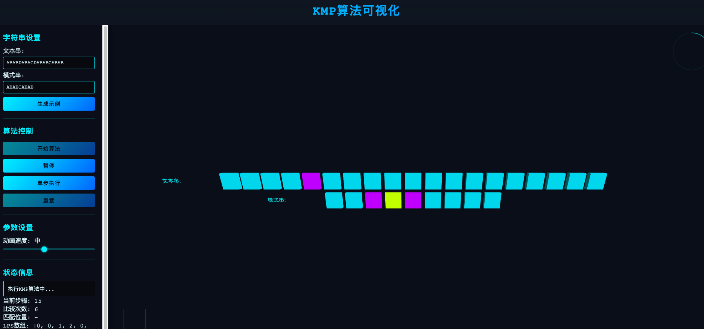
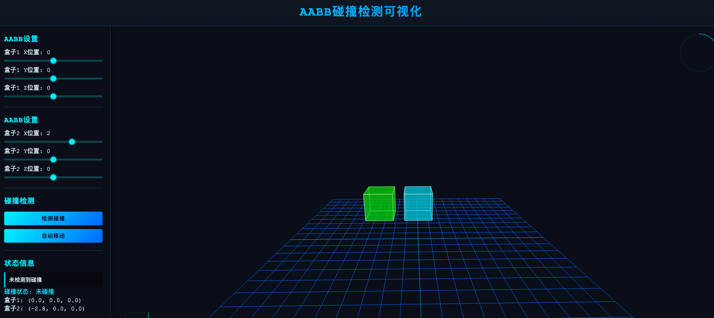
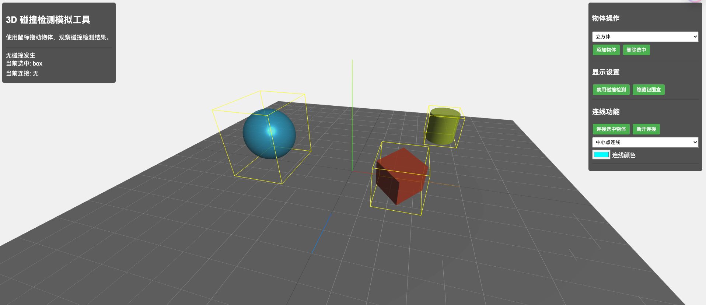
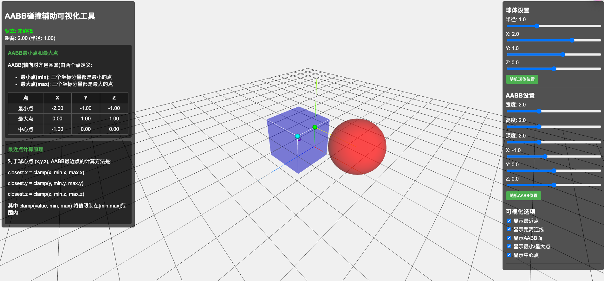
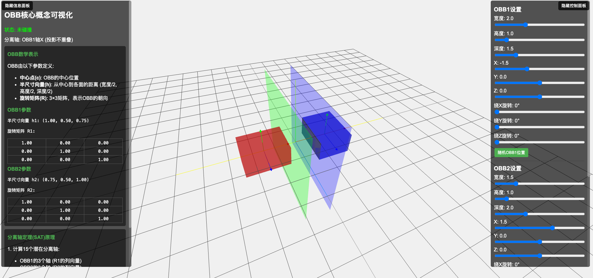
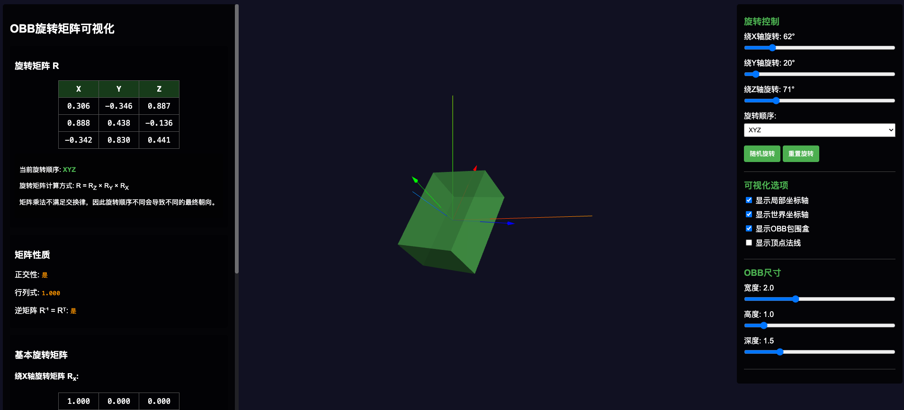
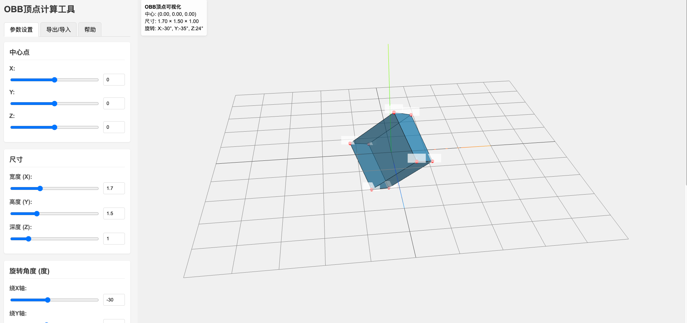
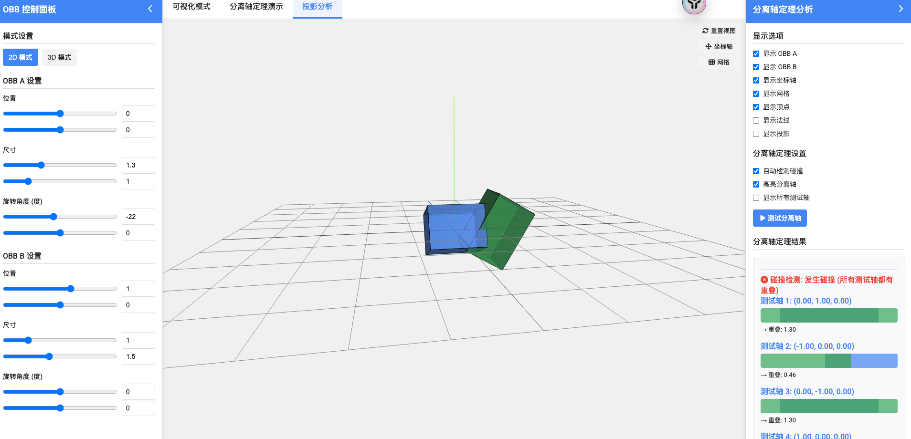
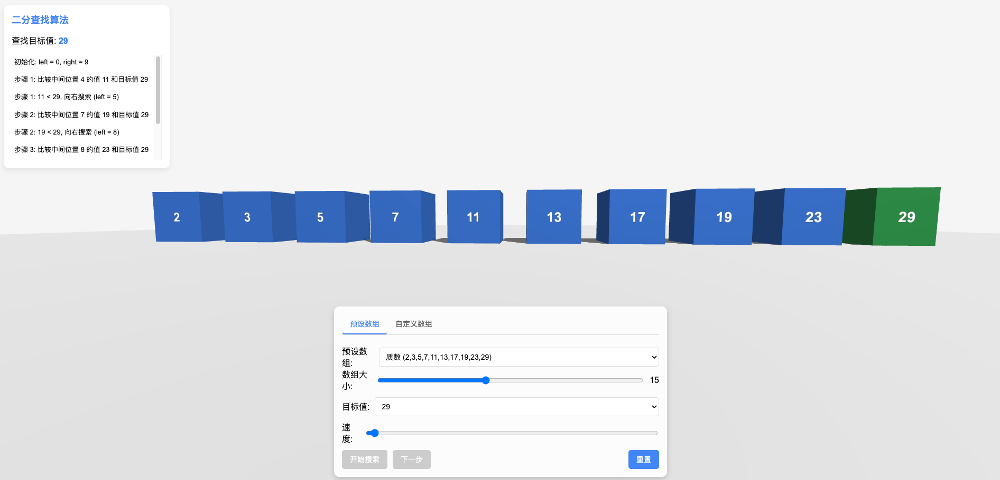
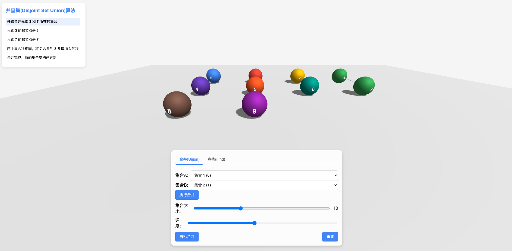

数组基本操作

展示数组的存储方式、查找、插入和删除等基本操作。
栈的基本操作

演示栈的 FILO 结构，以及 push、pop 操作。
普通队列基本操作

模拟普通队列的 FIFO 规则。
贝赛尔曲线

贝塞尔曲线（Bezier Curve）是一种用于计算机图形学中的数学曲线，广泛应用于动画、路径规划、矢量图形设计和许多其他图形领域。
A*寻路

A 算法是一种高效的路径搜索算法，广泛应用于游戏 AI、机器人导航和地图应用。它结合了 Dijkstra 算法的最短路径搜索和贪心搜索的启发式方法，能够快速找到从起点到终点的最优路径。
二叉树基本遍历

支持自定义数据动态构建二叉树病实现二叉树的四种基本遍历方式：前序遍历、中序遍历、后序遍历和层序遍历。它们按照不同的访问顺序来遍历二叉树中的所有节点。
冒泡排序

冒泡排序是一种简单的排序算法，它通过重复遍历数组，每次比较相邻的两个元素并交换顺序，使较大的元素逐步"冒泡"到数组的末尾。
选择排序

选择排序每轮在未排序的部分找到最小（或最大）的元素，并放到正确的位置。
Dijkstra算法

Dijkstra（迪杰斯特拉）算法是一种用于单源最短路径的算法，通常用于加权图，能够找到从一个起点到其他所有顶点的最短路径。
KMP算法
KMP（Knuth-Morris-Pratt）算法 是 一种用于字符串匹配的高效算法，主要用于在一个文本字符串 T 中查找一个模式字符串 P 的所有出现位置。
AABB碰撞检测
AABB（Axis-Aligned Bounding Box，轴对齐包围盒） 是一种 轴对齐的矩形或立方体边界框，用于 碰撞检测、物理模拟和计算几何 等领域。它的特点是 所有边都与坐标轴平行，这样可以大大简化碰撞检测计算。
碰撞检测辅助工具V1
多形状AABB包围盒,提供各种多形状的AABB包围盒计算以及多模式显示,包括碰撞模拟、直线连线等
碰撞检测辅助工具V2
与碰撞检测辅助工具V1共同服务于碰撞检测,但V2版本侧重于AABB的关键概念的理解和辅助计算,点位显示,原理理解等
OBB碰撞检测-核心概念
包含了OOB的半尺寸向量、旋转矩阵、分离轴等核心概念的基本演示和计算,支持参数动态调整!
OBB碰撞检测-旋转矩阵
OBB碰撞检测-核心概念可视化,侧重旋转矩阵相关的计算、同样支持动态参数和鼠标操作!
OBB碰撞检测-顶点计算
OBB碰撞检测-核心概念可视化,侧重八个顶点相关的计算、同样支持动态参数和鼠标操作!
OBB碰撞检测-分离轴定理(灰度中)
OBB碰撞检测-核心概念可视化,侧重分离轴定理、同样支持动态参数和鼠标操作!
二分查找算法
二分查找（Binary Search）是一种高效的查找算法，适用于在有序数组中查找某一特定元素。其基本思想是通过将目标值与数组中间的元素进行比较，从而将查找范围缩小一半，以此类推，直到找到目标值或确定目标值不在数组中为止。
并查集
Union-Find 或 Disjoint Set Union, DSU）是一种用于处理不相交集合的数据结构，主要用于解决动态连通性问题。